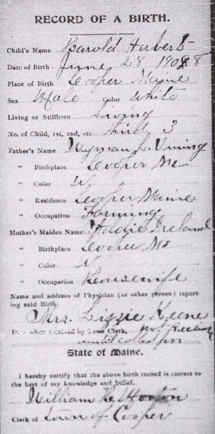

Birth Data
Birth record for Harold Herbert Vining:
Census Data
| 1940 | |
| Harold Herbert Vining | 31 |
| Mildred Edith (Morrison) Vining | 31 |
| Maurice Edwin Vining | 7 |
| Shirley Joyce Vining | 6 |
| Dorothy Mae Vining | 4 |

Death Data
Headstone for Harold Herbert Vining and Mildred Edith (Morrison) Vining, in West Ridge Cemetery, Cooper, Washington County, Maine (from Find A Grave):